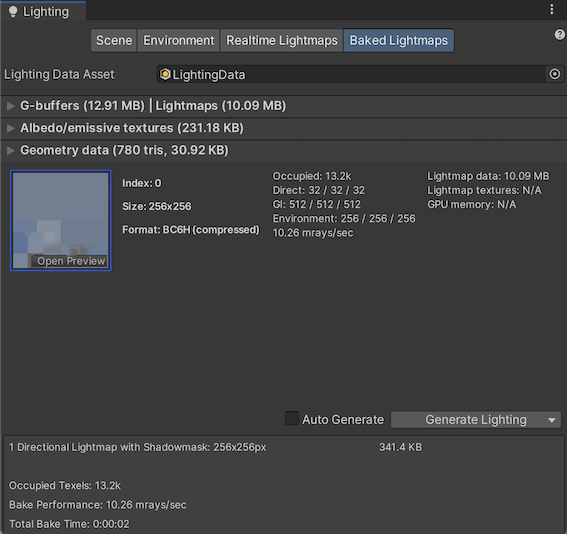
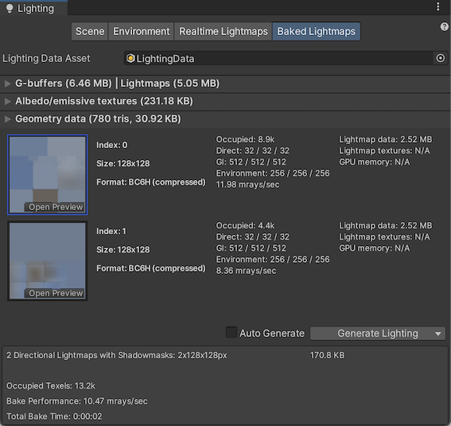

A LightmapA pre-rendered texture that contains the effects of light sources on static objects in the scene. Lightmaps are overlaid on top of scene geometry to create the effect of lighting. More info
See in Glossary Parameters Asset contains a set of values for the parameters that control Unity’s lighting features. These Assets allow you to define and save different sets of values for lighting, for use in different situations.
Lightmap Parameters Assets allow you to quickly create presets optimized for different types of GameObjectsThe fundamental object in Unity scenes, which can represent characters, props, scenery, cameras, waypoints, and more. A GameObject’s functionality is defined by the Components attached to it. More info
See in Glossary, or for different platforms and different Scene types (for example, indoor or outdoor Scenes).
To create a new Lightmap Parameters Asset, right-click in the Project window and go to Create > Lightmap Parameters. Unity stores this in your Project folder.
When you click on a Lightmap Parameters Asset in the Project windowA window that shows the contents of your Assets folder (Project tab) More info
See in Glossary, the InspectorA Unity window that displays information about the currently selected GameObject, asset or project settings, allowing you to inspect and edit the values. More info
See in Glossary window displays the values defined in that Asset. The parameters and their descriptions are listed in the table below.
These parameters configure Enlighten Realtime Global Illumination.
See render pipeline feature comparison for more information about support for EnlightenA lighting system by Geomerics used in Unity for lightmapping and for Enlighten Realtime Global Illumination. More info
See in Glossary Realtime Global IlluminationA group of techniques that model both direct and indirect lighting to provide realistic lighting results.
See in Glossary across render pipelinesA series of operations that take the contents of a Scene, and displays them on a screen. Unity lets you choose from pre-built render pipelines, or write your own. More info
See in Glossary.
| Property | Function |
|---|---|
| Resolution | This value scales the Realtime Resolution value in the Scene tab of the Lighting Window (menu: Window > Rendering > Lighting > SceneA Scene contains the environments and menus of your game. Think of each unique Scene file as a unique level. In each Scene, you place your environments, obstacles, and decorations, essentially designing and building your game in pieces. More info See in Glossary) to give the final resolution of the lightmap in texels per unit of distance. |
| Cluster Resolution | The ratio of the cluster resolution (the resolution at which the light bounces are calculated internally) to the final lightmap resolution. See documentation on GI Visualizations in the Scene view for more information. |
| Irradiance Budget | This value determines the precision of the incoming light data used to light each texel in the lightmap. Each texel’s lighting is obtained by sampling a “view” of the Scene from the texel’s position. Lower values of irradiance budget result in a more blurred sample. Higher values increase the sharpness of the sample. A higher irradiance budget improves the lighting, but this increases run-time memory usage and might increase CPU usage. |
| Irradiance Quality | Use the slider to define the number of rays that are cast and used to compute which clusters affect a given output lightmap texel. Higher values offer visual improvements in the lightmap, but increase precomputing time in the Unity Editor. The value does not affect runtime performance. |
| Modelling Tolerance | This value controls the minimum size of gaps in MeshThe main graphics primitive of Unity. Meshes make up a large part of your 3D worlds. Unity supports triangulated or Quadrangulated polygon meshes. Nurbs, Nurms, Subdiv surfaces must be converted to polygons. More info See in Glossary geometry that allows light to pass through. Make this value lower to allow light to pass through smaller gaps in your environment. |
| Edge Stitching | If enabled, this property indicates that UV charts in the lightmap should be joined together seamlessly, to avoid unwanted visual artifacts. |
| Is Transparent | If enabled, the object appears transparent during the Global Illumination calculations. Back-faces do not contribute to these calculations, and light travels through the surface. This is useful for invisible emissive surfaces. |
| System Tag | A group of objects whose lightmap Textures are combined in the same lightmap atlas is known as a “system”. The Unity Editor automatically defines additional systems and their accompanying atlases if all the objects can’t be fitted into a single atlas. However, it is sometimes useful to define separate systems yourself (for example, to ensure that objects inside different rooms are grouped into one system per room). Change the System Tag number to force new system and lightmap creation. The exact numeric sequence values of the tag are not significant. |
These parameters configure lightmapping.
See render pipeline feature comparison for more information about support for lightmapping across render pipelines.
| Property | Function | |
|---|---|---|
| Enlighten Baked Global Illumination | Progressive Lightmapper | |
| Blur Radius | The radius of the blur filter that is applied to direct lighting during post-processingA process that improves product visuals by applying filters and effects before the image appears on screen. You can use post-processing effects to simulate physical camera and film properties, for example Bloom and Depth of Field. More info post processing, postprocessing, postprocess See in Glossary in texels. The radius is essentially the distance over which neighboring texels are averaged out. A larger radius gives a more blurred effect. Higher levels of blur tend to reduce visual artifacts but also soften the edges of shadows. |
Blur Radius is not available when you use Progressive LightmapperA tool in Unity that bakes lightmaps according to the arrangement of lights and geometry in your scene. More info See in Glossary. |
| Anti-aliasing Samples | Determines the number of sub-texel positions to use when sampling a lightmap texel. Set the value above 1 to use supersampling to improve lightmap quality and reduce artifacts related to aliasing. •A value of 1 disables super sampling. •Values between 2 and 8 provide 2x2 supersampling. The default value is 8, which removes most aliasing artifacts. •Values between 9 and 256 provide 4x4 supersampling. Use these values to remove artifacts, like jagged edges in direct lighting. This can happen when you use baked shadows. Note: A higher anti-aliasing sample value uses more memory. This means that if you use a high sample number in a large Scene, with large lightmap texture sizes the lightmap bake might not complete. |
|
| Direct Light Quality | The number of rays used to evaluate direct lighting. A higher number of rays tends to produce more accurate soft shadows but increases bake time. | Direct Light Quality is not available when you use Progressive Lightmapper. |
| Backface Tolerance | The structure of a Mesh sometimes causes some texels to have a “view” that includes back-facing geometry. Incoming light from a backface is meaningless in any Scene. Because of this, this property lets you select a percentage threshold of light that must come from front-facing geometry in order for a texel to be considered valid. Invalid texels have their lighting approximated from their neighbors’ values. Lowering this value can solve lighting problems caused by incoming light from backfaces. | Specifies the percentage of front-facing geometry sampling ray hits a texel must have for Unity to consider it valid. This makes it possible for Unity to invalidate a texel if too many of the rays cast from it hit backfaces (e.g. if the texel is inside geometry). A value of 1.0 means that Unity considers a texel invalid when any of its rays hits a backface, for example. When a texel is invalid, Unity clones valid values from surrounding texels to prevent artifacts. Lower this value to solve lighting problems caused by backface samples. Use the Texel Validity Scene View Draw Mode to adjust this value. |
| Pushoff | Pushes ray origins away from geometry along the normal based on the value you specify in modelling units. Unity applies this value to all baked lightmaps. It affects direct light, indirect light, and baked ambient occlusionA method to approximate how much ambient light (light not coming from a specific direction) can hit a point on a surface. See in Glossary. Adjust this setting to reduce self-occlusion and self-shadowing artifacts. |
|
| Baked Tag | Groups specific sets of objects in atlases. As with the System Tag, the exact numeric value is not significant. Unity never puts GameObjects with different Baked Tag values in the same atlas. However, there is no guarantee that objects with the same tag end up in the same atlas because there may be too many objects with that tag to fit into one atlas. See image A (below) for an example of this. You do not need to set this value when you use the multi-scene bake API because Unity groups automatically in that case. You can use Baked Tag to replicate some of the behavior of the Lock Atlas option. See Baked Tags: Details for more information. | |
| Limit Lightmap Count | Limit Lightmap Count is not available when you use Enlighten Baked Global Illumination. | Applies a limit to the number of lightmaps that Unity can use to pack together GameObjects with the same Baked Global Illumination settings. When you enable this limit, a related setting appears called Max Lightmaps. That setting determines the lightmap limit. The Lightmapping Settings define the size of these lightmaps. Unity considers GameObjects to have the same Baked Global Illumination settings if they have equal values for Anti-aliasing Samples, Pushoff, Baked Tag, and Backface Tolerance. This means that Unity might pack together GameObjects associated with different Lightmap Parameter Assets. To pack GameObjects into a set number of lightmaps, Unity scales down UV layouts until all fit within the specified number of lightmaps. This process may reduce lightmap resolution. |
 
The two images above shows two views of the same Scene:
Top: Everything is in one atlas because all the GameObjects have the same Baked Tag.
Bottom: One GameObject is assigned a different Baked Tag, and forced into a second lightmap.
These parameters configure Baked Ambient Occlusion.
| Property | Function |
|---|---|
| Quality | The number of rays cast when evaluating baked ambient occlusion (AO). A higher numbers of rays increases AO quality but also increases bake time. |
| Anti-aliasing Samples | The number of samples to take when doing anti-aliasing of AO. A higher number of samples increases the AO quality but also increases the bake time. |
| Property | Function |
|---|---|
| Backface Tolerance | The percentage of rays shot from an output texel that must hit front faces for the lighting system to consider them usable. This allows Unity to invalidate a texel if too many of the rays cast from it hit back faces ( (for example, if the texel is inside some geometry). The lighting system clones valid values from the surrounding texels to avoid unintended artifacts. If Backface Tolerance is 0.0, the lighting system rejects the texel only if it sees nothing but backfaces. If it is 1.0, the lighting system rejects the ray origin if it has even one ray that hits a backface. |
To assign a Lightmap Parameters Asset to the whole Scene:
To assign a Lightmap Parameters Asset to a single GameObject, ensure the GameObject has a Mesh RendererA mesh component that takes the geometry from the Mesh Filter and renders it at the position defined by the object’s Transform component. More info
See in Glossary or TerrainThe landscape in your scene. A Terrain GameObject adds a large flat plane to your scene and you can use the Terrain’s Inspector window to create a detailed landscape. More info
See in Glossary component attached.
To assign a Lightmap Parameters Asset to a Mesh Renderer component:
To assign a Lightmap Parameters Asset to a Terrain component:
2019–03–28 Page amended
2018–03–28 Page amended
Limit Lightmap Count added in 2019.1 NewIn20191
Progressive Lightmapper added in 2018.1 NewIn20181
LightmapParameters